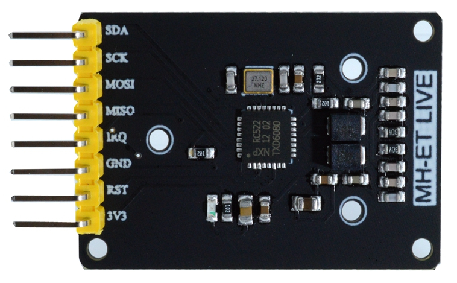
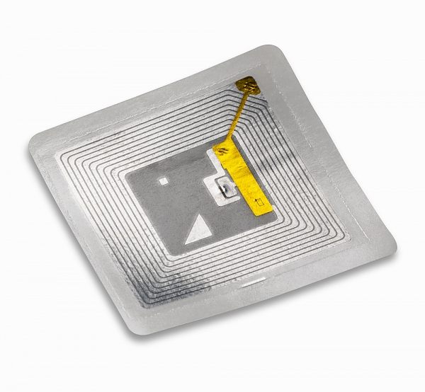
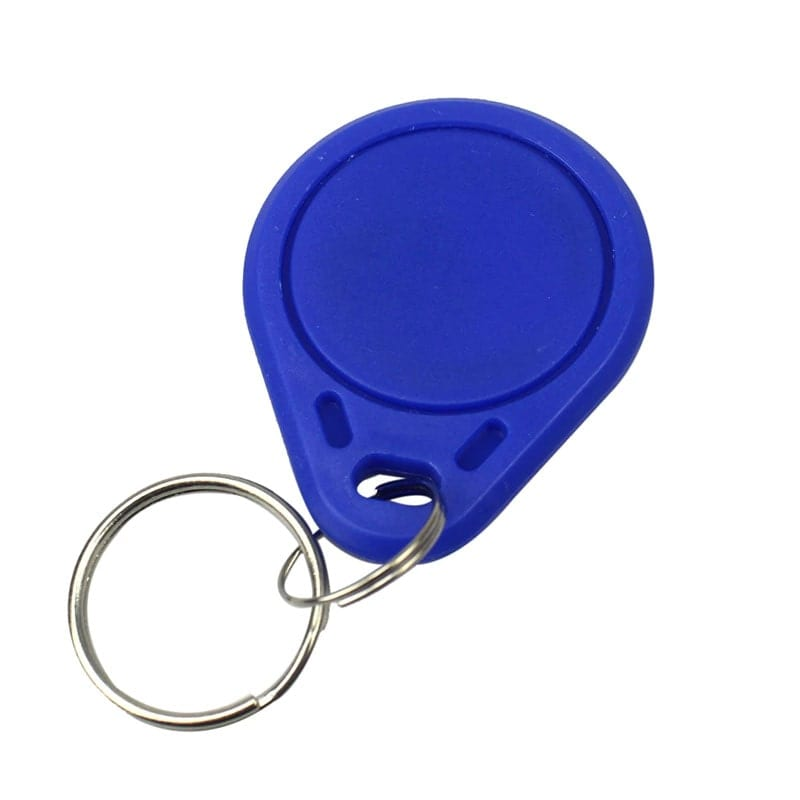
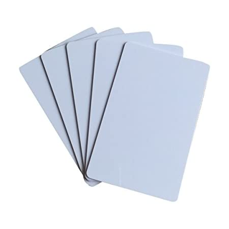

Control y robótica 4º E.S.O.
- Inicio
- 1. Historia de la automática
- 2. Mecanismos, automatismos y robots
- 3. Sistemas de control
- 4. Tipos de control
- 5. Robótica
- 6. SENSORES
- 7. ACTUADORES
- Proyectos para el aula
Lectores RFID
Lector RC522

Este lector funciona a través del bus SPI
Lector RC522 mini

Este lector funciona a través del bus SPI
Lector PN532

Este lector funciona a través del bus SPI y del bus I2C
SOPORTES PARA GRABACIÓN Y LECTURA DE LA INFORMACIÓN
En el sistema RFID, la información puede ser guardada en diversos soportes. Los más típicos son:
- Etiquetas

- Llaveros

- Tarjetas
